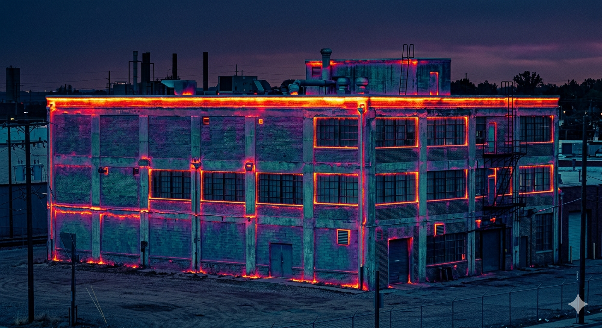
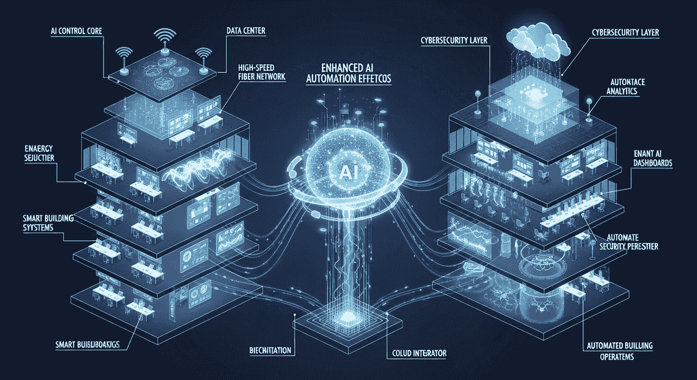
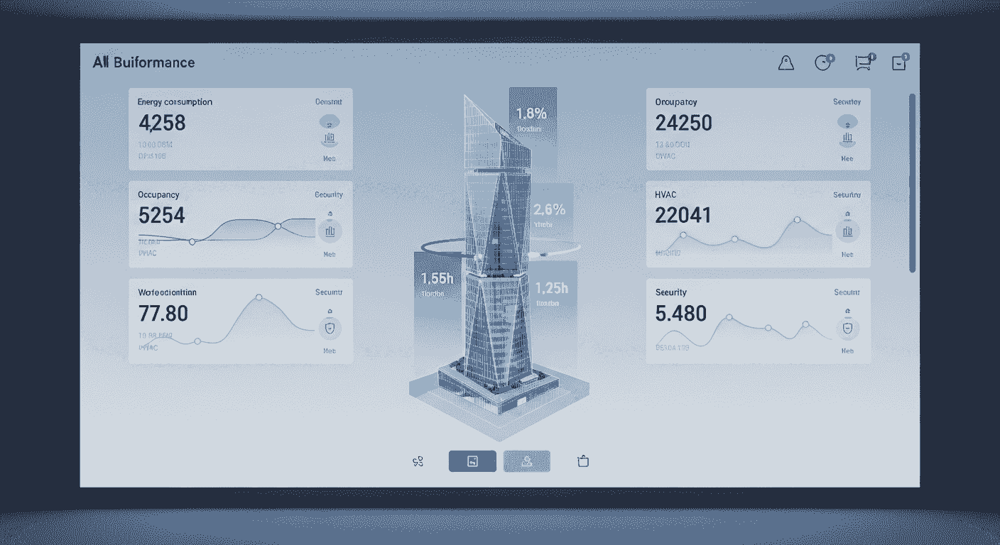
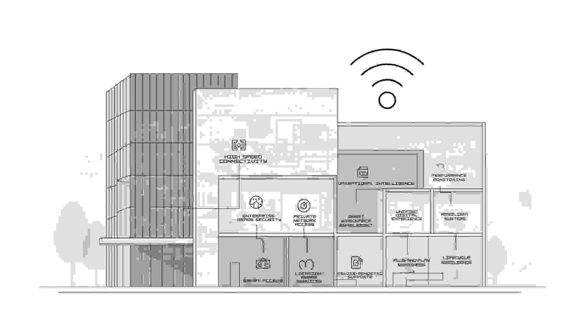
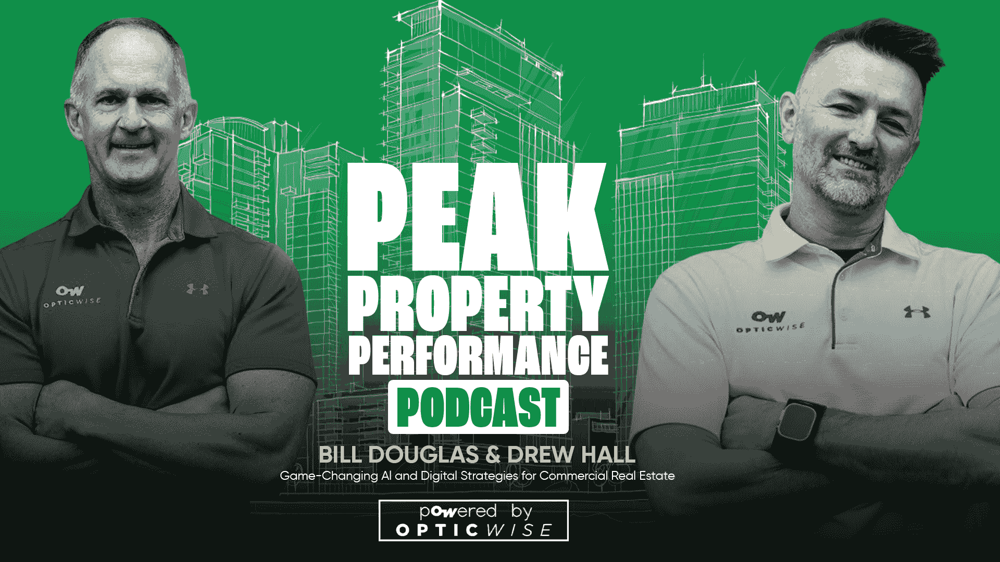
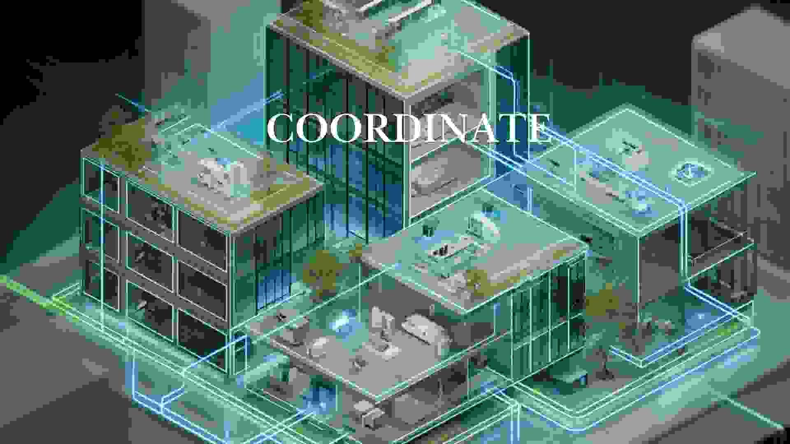
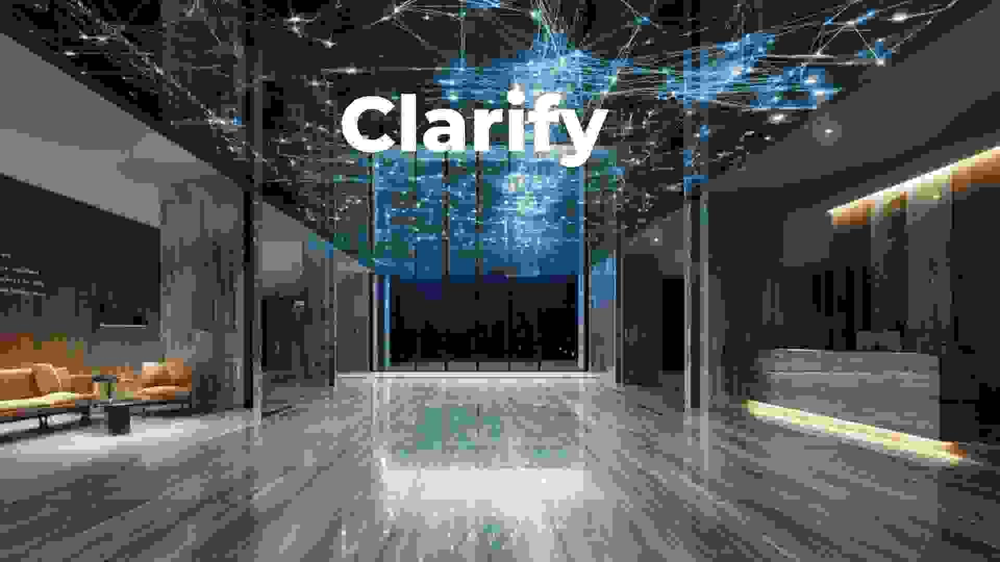
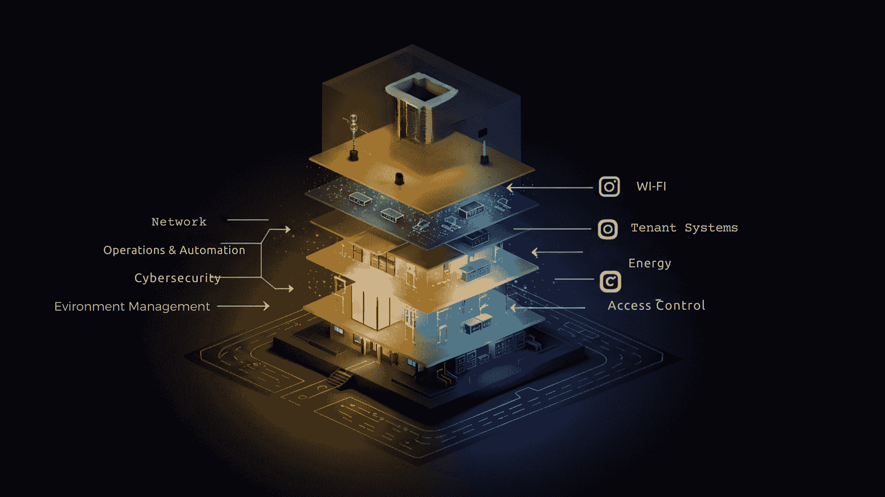
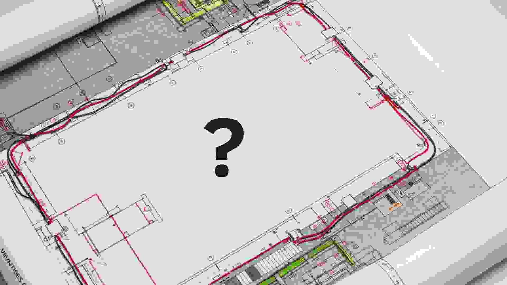
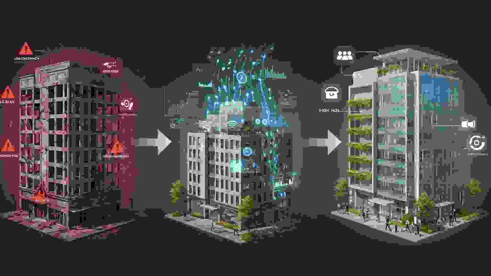

Insights for Owners Who Want Control
This is where we publish the owner plays: how to reclaim control, reduce operational risk, and turn data & digital infrastructure into a compounding portfolio asset.
If you don't own your data & digital infrastructure, your vendors do.
AI Agents Are Already Inside Your Buildings. Who Gave Them Permission?
Three signals — a major real estate breach, fresh OT vulnerabilities, and a CRE-wide acknowledgment that agentic AI is already running operations — tell the same story: software is acting on your operating data with permissions nobody on your side wrote down.
Your PMS Has an API. That's Not the Same as a Data Strategy.
An API isn't a data strategy. See why CRE owners need governance, not just connectors — and what real owner-controlled data looks like.
The AI Model Is Commoditizing. Your Owner Data Is the Real Moat.
Foundation AI models are commoditizing fast — frontier and open-source models are nearly equivalent in performance and cost. The competitive moat for CRE owners has moved from the AI model to the owner-controlled data layer it runs on. The model can change tomorrow; the data…
Why CRE Tech Is Shifting From Point Solutions to Platforms (and What to Do About It)
CRE tech is consolidating into platforms. See why owners must avoid platform lock-in while still capturing the operational benefits.
The Winners in CRE Will Own the Stack—Not Just the Asset
Owning the building isn't enough anymore. See why the next generation of CRE winners owns the entire stack: data, network, and intelligence.
The Most Valuable Asset in CRE Isn’t the Building—It’s the Data
The most valuable asset in CRE isn't the building anymore — it's the data the building generates. See why owners must claim it before vendors do.

The Hidden Cost Killing Your NOI (And You Don’t See It)
There's a hidden cost in your CRE portfolio you don't see — until you do. See where vendor-controlled infrastructure quietly drains NOI.
Operational Efficiency Is the New Alpha in Commercial Real Estate
Operational efficiency is the new alpha in commercial real estate. Disciplined ops — not financial engineering — separates winners from holders this cycle. Owner-controlled data is what makes the discipline measurable, repeatable, and provable to lenders and LPs.
Data Centers Are the New CRE Gravity Well
Data centers are pulling capital, talent, and attention away from traditional CRE. See why every owner should reckon with the gravity well now.
Owners Are Overwhelmed—Not Under-Informed
CRE owners aren't lacking data — they're drowning in it. See why clarity, not more dashboards, is the lever that compounds asset value.
CapEx Is Tightening. ROI Scrutiny Is Brutal. And “Cool Tech” Is Dead.
CapEx is tightening, ROI scrutiny is brutal, and 'cool tech' is dead. See how CRE owners must justify every digital infrastructure dollar now.

AI Won’t Fix Your Property—It Will Expose What’s Broken
AI brings hidden CRE problems into the light. See why owners with weak governance will see operational gaps revealed faster than fixed.
AI Won’t Fix Your Property—But This Will
AI won't fix a property with a broken foundation. See what actually fixes CRE: owner-controlled data and a digital infrastructure strategy.
AI Will Commoditize CRE—Unless You Own Something It Can’t Replicate
AI commoditizes everything it can copy. See why CRE owners must hold something AI can't replicate — and what that 'something' actually is.

If Your Building Sold Tomorrow, Would the Data Be Included?
Data is becoming a CRE valuation driver — but only if you actually own it. See what changes when buyers ask for the data on close.
AI Needs a Nervous System: Why Digital Infrastructure Is the Real Enabler
AI is failing in CRE because buildings can't carry signal. See why digital infrastructure is the nervous system AI actually needs.
AI Governance Is Now a CRE Risk Category — Are You Exposed?
AI governance has crossed from technical concern to CRE risk category. See where regulators are heading and how owners can prepare now.
Why Asset Managers Are Flying Blind (And Don’t Even Know It)
Asset managers are accountable for performance but rarely have raw data access. See why owner-controlled data is now the alpha lever.
Hyperscalers Are Industrializing Digital Infrastructure. Your Building Is Next.
Hyperscalers have industrialized digital infrastructure. See what their playbook teaches CRE owners — before vendor platforms run your building too.
The RealPage Settlements Are Not the Story. The Story Is Who Makes Your Decisions.
The RealPage settlements aren't the lesson. See why CRE owners are being held accountable for vendor decisions — and how to take governance back.
The Shadow AI Problem Is Already in Your Buildings
Shadow AI is already running in your buildings — under vendor control. See why CRE owners must surface and govern it before it shapes asset value.
Office Just Had Its Best Quarter Since 2018. The Winners Will Be the Owners Who Can See Their Buildings.
Office had its best quarter since 2018. See why the winners will be CRE owners with the visibility to optimize each property in real time.
Data Centers Just Got Their Own REIT. Every Owner Should Read the Signal.
When data centers get their own REIT, the market just told you what's becoming the asset. See why every CRE owner should read the signal now.
Blackstone Is Filing a $2 Billion IPO Around Digital Infrastructure. Most CRE Owners Don't Own Theirs.
Blackstone's $2B digital infrastructure IPO is a signal. See why most CRE owners are giving theirs away — and what to do before the gap widens.
AI Promises 20-30% Savings in Your Building. That's Only True if You Own Your Data.
AI promises 20-30% operating savings in CRE — but only owners with controlled data capture the upside. See what data ownership actually requires.
Blackstone, Brookfield, and JPMorgan Just Rewrote the Rules on Real Estate Value
Major institutional moves into digital infrastructure are repricing CRE. See what owners need to know — and own — before the next wave hits.
AI in CRE Won't Save You If You Don't Own Your Data
AI without owner-controlled data is rented intelligence. See why CRE owners must own their data before they buy another AI tool.
When the Scorekeeper Works for the Vendor, Who Is Looking Out for You?
Vendor-run scoring systems aren't neutral. See why CRE owners need independent governance of their building data, networks, and ratings.
AI Won’t Fix Your Building Operations. Your Data Foundation Will.
AI access in CRE is widespread but results are weak. See why owner-controlled data foundations decide who actually wins with AI in operations.
Part 5: Digital Infrastructure as the Strategic Foundation for AI-Driven ESG and Sustainability Goals
AI-driven CRE outcomes need a digital infrastructure foundation. See why owner-controlled infrastructure is the strategic enabler — not the dashboard.
Part 4: AI Adoption Without Strategy Is Waste — Digital Infrastructure Makes It Work
AI bolted onto a broken foundation creates more problems than it solves. See why CRE owners need a digital infrastructure strategy first.
Part 3: Digital Infrastructure + AI = Operational Excellence (and Higher Asset Value)
AI works only when systems connect. See how owner-controlled digital infrastructure turns AI into operational excellence — and higher CRE asset value.

Data Is the New Real Estate Utility — But Only If You Own the Network That Collects It
If you don't own your building's network, you don't own its data—or the NOI it could generate. Here's why digital infrastructure is real estate's new utility.

AI Isn’t the Future — It’s Today: Why Your Digital Infrastructure Must Deliver Actionable Intelligence
AI is already reshaping CRE operations. See why your digital infrastructure must deliver actionable, owner-controlled intelligence — not just dashboards.
Part 5 CRE’s Digital Divide: Why Infrastructure Ownership Determines AI Readiness
AI readiness in CRE isn't about software. It's about who owns the network and data. Here's why infrastructure ownership decides who wins with AI.
Part 4 The Coming Regulation Wave: Why CRE Must Prepare for Ethical AI Now
AI regulation is coming for commercial real estate. Learn how CRE owners can build governance now and avoid costly retrofits later.

Part 3 : ESG Illusion: Why AI Dashboards Alone Won’t Deliver Sustainable Results
ESG outcomes need owner-controlled data, not just AI dashboards. See how CRE leaders move past the illusion to real, auditable sustainability.
Part 2 : What CRE Gets Wrong About Tenant Experience (Hint: It’s Not a Smart Lock)
Smart locks and apps don't define tenant experience. See what CRE owners get wrong — and what intelligent buildings actually deliver to tenants.

Digital Infrastructure-First Series: Part 1 Digital Infrastructure Is the New Amenity: Monetizing Your Smart Building Backbone
Wi-Fi, IoT, and connectivity are the new amenities. Learn how CRE owners turn the smart building backbone into a recurring revenue stream.
The Case for a Digital Architect: Why CRE Property Managers Are Drowning in Disconnected Tech
Property managers are drowning in disconnected tech. See why every CRE portfolio needs a digital architect to govern its digital infrastructure.
Organizational Pencils: Why Agility, Not Perfection, Will Win in 2026
Perfect plans break on contact with AI. See why agile CRE operators with owner-controlled data will out-execute polished portfolios in 2026.
Digital Infrastructure Isn’t Just Wi-Fi—It’s the Nervous System of Your Property
Digital infrastructure is more than Wi-Fi. Learn why it's the nervous system of every modern property — and what owners lose when ISPs control it.
The Cost of Doing Nothing: What You Lose by Letting the ISP Build Your Network
When the ISP builds your CRE network, you rent your data forever. See the hidden cost — and why owner-controlled infrastructure pays back fast.
How One Portfolio Used AI to Cut Utility Spend Double-Digits
See how one CRE portfolio used AI on owner-controlled data to cut utility spend double-digits — turning NOI into a measurable, repeatable outcome.
Own the Digital Infrastructure, Own the Leverage
In commercial real estate, whoever owns the digital infrastructure owns the leverage. Owner-controlled connectivity and data give the operator pricing power, vendor flexibility, AI readiness, and durable NOI. Vendor-controlled stacks transfer that leverage to someone whose…
Trust at First Sight—Data Dictionaries, Refresh Stamps, and Adoption
Decision engines only work on trusted data. See how data dictionaries, refresh stamps, and governance drive adoption across CRE portfolios.
What AI Is Doing to Apartment Demand—And How Buildings Must Respond
Generative AI is rewiring how renters search and decide. See how multifamily owners must respond — at the building and portfolio level — to win demand.
The GenAI Divide: What CRE Leaders Must Know Before Falling Behind
GenAI is splitting CRE into leaders and laggards. Learn what owners and operators must know — and own — to land on the right side of the divide.
The Post-Pandemic Office Isn’t Smaller—It’s Smarter
The post-pandemic office isn't shrinking — it's getting smarter. See how intelligent buildings turn footprint into a tenant-experience advantage.

CREtech 2025: The AI Illusion and the Next Wave No One’s Talking About
CREtech 2025 was full of AI demos. Here's the real story — the next wave reshaping commercial real estate that nobody is talking about.

From Data to Decisions: What CRE Can Learn from Cortland’s Product Mindset (with Shea Fallick)
How does Cortland turn CRE data into better decisions? Shea Fallick on product thinking, owner-controlled data, and what other operators can copy.
CRE owners are the data stewards – whether you know it or not
Every CRE owner is already a data steward. See what that means for governance, AI readiness, and how to turn obligation into competitive advantage.
The Hidden Tech Debt You Won’t Catch in the Code
CRE tech debt isn't in the code — it's in vendors, networks, and data ownership. See where it hides and how it silently erodes NOI and AI readiness.
Mastering Control: The Final C in the 5C Framework
Control is the last step of the 5C Plan — where governed data meets decision engines. See how CRE owners turn intelligence into permissioned action.

Bringing Systems Together: The Coordination Step in the Five C’s
Coordinate is where CRE intelligence comes together — identity, access, lineage, and governance. See what it takes to make data act as one across systems.
Collect – Unlocking the Value Hidden in Your Building’s Data
Collect is step three of the 5C Plan. Learn how to capture and normalize building data into a reusable model that fuels every downstream decision.

Connect – Creating the Flow That Unlocks Your Building’s Potential
Connect is step two of the 5C Plan. Learn how owner-controlled connectivity turns isolated buildings into a repeatable, portable performance platform.

Clarify – The First Step to Peak Property Performance
Clarify is step one of the 5C Plan. Define success metrics, map ownership, and identify leakage to set every CRE asset up for peak performance.
The Hidden Cost of Vendor Sprawl (And What to Do About It)
Vendor sprawl quietly erodes NOI, governance, and AI readiness. See how CRE owners take back control with owner-managed digital infrastructure.
The Operator’s Guide to Autonomous Buildings
Autonomous buildings aren't sci-fi — they're a roadmap. See how operators move from manual ops to AI-driven, owner-permissioned automation, step by step.
Wi-Fi Is Not a Utility. It’s an Investment Signal
How a property handles Wi-Fi tells investors how it's run. See why connectivity is now an investment-grade signal for CRE asset performance.
Digital-First Strategy: The Only Competitive Edge That Lasts
Tools change. Tenants change. The lasting edge in CRE is digital-first strategy built on owner-controlled infrastructure. Here's how leaders execute.

TThe Hidden Cap Rate Enhancer No One Talks About
There's a cap rate enhancer hiding in plain sight in your portfolio. Learn how owner-controlled digital infrastructure quietly raises asset value.

How One Operator Cut $120K in OPEX With a Single Upgrade
See how one CRE operator cut $120K in annual OPEX with a single digital infrastructure upgrade — and laid the groundwork for a portfolio-wide rollout.
Reframing CRE Strategy: Stop Playing to Win—Start Building to Endure
Short-term wins fade. Enduring CRE portfolios are built on owner-controlled data and infrastructure. See how to reframe strategy for the long game.
What’s Your Smart Building Strategy—Or Are You Guessing?
Most CRE owners don't have a smart building strategy. See what one looks like — and how to build one anchored on owner-controlled digital infrastructure.
What Starbucks Taught Us About Smart Property Ops
Starbucks turned operations into a system. So can CRE. The lesson: owner-controlled data and standardized workflows compound across locations far better than bespoke per-store decisions. Apply the same discipline to commercial real estate and the portfolio finally becomes…
Why 98% of Property Owners Are Leaving Money on the Table
Most CRE owners miss the NOI hidden in their digital infrastructure. See why 98% leave money on the table — and how to capture what's already yours.
What Swedish Beach Volleyball Can Teach You About CRE Strategy
Why does Sweden punch above its weight in beach volleyball? The same answer applies to CRE: standardized fundamentals beat flashy moves.
Why Power—and Not Just Square Footage—is the Future of Smart Buildings
AI workloads, EVs, and IoT are rewriting building economics. See why power capacity — not square footage — is the metric that decides asset value.

The $800k CONVERSATION DEVELOPERS KEEP MISSING
There's an $800K revenue conversation most CRE developers skip. See what it is, why it's missed, and how owner-controlled infrastructure unlocks it.
Who's Making $480K/Year Off Your Tenants? (Hint: It's Not You)
Telecoms and SaaS vendors quietly earn from your tenants. See who's making $480K/year off your building — and how to redirect it back to NOI.
Data Lake, Not Data Swamp: Structuring What You Collect
An ungoverned data lake becomes a swamp. See how to structure CRE data so it stays trustworthy, portable, and ready for any decision engine or LLM.
Before AI: You Need Data You Actually Own
AI without owner-controlled data is automation without governance. See why CRE owners need data sovereignty before they buy another AI tool.
From WiFi to Wealth: The Hidden Profit in Connectivity
Connectivity isn't a cost line — it's a profit line. See how CRE owners turn the building's network into recurring NOI and tenant value.
Monetize Like Amazon, Analyze Like Google — and Avoid Tesla’s Data Missteps
What Amazon, Google, and Tesla teach CRE owners about data: monetize it like Amazon, analyze it like Google, govern it better than Tesla did. The practical playbook is owner-controlled data, structured for monetization and analytics, with privacy and governance designed in —…
Why Redundant Networks Are Silent Killers
Redundant networks add cost, complexity, and security risk. See why CRE portfolios consolidate them — and what owner-controlled infrastructure replaces.
Invisible Guardians: Redefining Privacy in Commercial Real Estate
Privacy in CRE is no longer a notice on a wall. See how owner-controlled data and governance redefine tenant privacy — and protect asset value.

From Liability to Leadership: How CRE Data Unlocks Value in At-Risk Assets
Underperforming assets aren't always location problems — they're data problems. See how owner-controlled data turns at-risk CRE into category leaders.
From Amenities to Expectations: On-Demand Connectivity as a CRE Necessity
Tenants no longer ask for connectivity — they assume it. See how CRE owners deliver on-demand, owner-controlled connectivity that meets expectations.
Built to Last: Why Smart Infrastructure Is the Backbone of Future-Proof Buildings
Future-proof CRE buildings aren
The Hidden ROI of Digital Infrastructure Ownership in Commercial Real Estate
There's measurable ROI in owning your building's network and data. See how CRE owners quantify it — and put it on the balance sheet.
Data Infrastructure: The Engine Behind Modern CRE Operations
Modern CRE operations run on data infrastructure, not BMS. See what it takes to build the engine that powers every operational and AI decision.
AI in Commercial Real Estate: Innovation, Ethics, and the New Regulatory Frontier
AI in CRE is exciting and risky. Explore the innovation, ethics, and regulation reshaping commercial real estate — and how owners can stay ahead.
Not Just Smart—Strategic: Buildings Built for Better Tenancy
Smart features alone don
The CRE Tech Revolution: Why Data-Driven Properties Win in the Market
The CRE tech revolution rewards data-driven owners. See why data-fluent properties beat the market — and how to make yours one of them.

How to Use IoT Networks to Boost Operational Efficiency in Commercial Real Estate
IoT networks are operational tools, not novelties. See how CRE operators use them to cut costs, raise uptime, and standardize across the portfolio.

Smart Security: The Future of Access Control and Protection
Access control is becoming smart, governed, and tenant-friendly. See what modern CRE security looks like — and how owners adopt it without lock-in.
The Invisible Workforce: How IoT Networks Are Running CRE Behind the Scenes
An invisible workforce of IoT devices already runs much of CRE. See how operators turn this network into a governed, owner-controlled advantage.
Beyond Surveillance: How AI is Revolutionizing Commercial Property Security
AI in CRE security goes far beyond cameras. See how intelligent, owner-permissioned systems protect tenants, assets, and reputation.
The Business Case for Upgrading Digital Infrastructure in Office-to-Residential Conversions
Office-to-residential conversions live or die on infrastructure. See the business case for upgrading digital infrastructure first — before walls move.
5 Genius Ways Smart Building Tech Elevates the Tenant Experience
From frictionless access to personalized comfort, see five smart building tech moves that elevate tenant experience — and the NOI that follows.
Own Your Building’s Digital Infrastructure—Or Be Owned By It
If you don't own your building's network, your vendors do. See why CRE owners must take back digital infrastructure before AI cements the lock-in.
Soaring Above the Rest: How OpticWise Helps CRE Thrive in the Flight to Quality Era
In the flight to quality era, only owner-controlled buildings stand out. See how OpticWise helps CRE leaders raise the bar across every property.
How to Ensure Network Compliance in Multi-Tenant Commercial Properties
Compliance is a moving target in multi-tenant CRE. See how to engineer network governance that satisfies regulators, tenants, and insurers.
5 Ways Smart Building Technology Enhances Tenant Experience
From access to air quality, smart building tech is rewriting tenant expectations. Here are five concrete ways CRE owners deliver — and retain.
Why Network Resilience is Critical for Smart Building Success
When the network goes down, the smart building goes dumb. See why resilient, owner-controlled networks are non-negotiable for modern CRE.
How Building Intelligence is Driving Sustainable Work Environments
Sustainability outcomes need data, not slogans. See how building intelligence — grounded in owner-controlled data — drives real ESG results.
How Digital Twins Are Revolutionizing Commercial Real Estate
Digital twins make every CRE asset testable. See how owners use them — anchored on owner-controlled data — to plan, operate, and decide better.
Exploring the Impact of CRE Technology on Real Estate
CRE technology now touches every workflow — from leasing to ops. See how owners and operators capture the benefits without losing data sovereignty.
Optimizing Your Success: Advanced IoT Device Management Strategies
Managing thousands of IoT devices is its own discipline. See the strategies CRE operators use to keep them secure, governed, and producing value.
Why Digital Infrastructure is the Backbone of Modern Commercial Real Estate
Digital infrastructure decides what every other CRE system can do. See why owner-controlled networks have become the new backbone of real estate.
How Building Management Systems Enhance Security and Connectivity
Modern BMS does more than HVAC. See how owner-controlled BMS strengthens security, connectivity, and the tenant experience across CRE properties.
The Role of Commercial Real Estate Technology in Modern Business
CRE technology now shapes how every business uses space. See what owners and operators must do to stay relevant in tech-driven workplaces.
Building Automation Systems: The Future of Smart Building
Building automation is moving from controls to intelligence. See where it's heading — and how CRE owners build for an autonomous, owner-controlled future.

Transforming Spaces: The Impact of Smart Building Technology
Smart building tech is transforming how CRE spaces feel and perform. See how owners use it to differentiate properties without locking in vendors.
The Importance of a Future-Proof Network in the Digital Era
A future-proof network protects every CRE investment that follows. See what owner-controlled, future-proof infrastructure looks like — and why it matters.
How Intelligent Buildings Are Revolutionizing Multi-Family Living
From frictionless move-in to AI-tuned comfort, intelligent buildings are reshaping multi-family living. See how owners deliver — without lock-in.
How Digital Infrastructure is Shaping the Modern Business Landscape
Digital infrastructure no longer ends at the property line. See how it shapes every modern business — and what CRE owners owe their tenants.
Why Intelligent Buildings Are the Next Big Thing for investors
Investors are pricing intelligence into CRE. See why intelligent buildings — built on owner-controlled data — are the next investable category.
Smart Access and Workspace Optimization in Modern Space as a Service
Space-as-a-service runs on smart access and live optimization. See how owners deliver both — securely, governed, and free from vendor lock-in.
How Resolute Building Intelligence Transforms Commercial Real Estate Management
Resolute building intelligence is rewriting how CRE is managed. See how owners turn governed data into smarter decisions across every property.
How Smart Tech is Shattering Safety Standards in Modern Buildings
From early-warning systems to access governance, smart tech is shattering legacy safety standards. See what modern CRE looks like — and how to adopt it.
How Smart Technology is Enhancing Tenant Experience in Commercial Real Estate
Tenants now expect personalized, frictionless buildings. See how smart technology enhances CRE tenant experience — without trapping owners in vendor stacks.
Proactive Cybersecurity: How Smart Building Tech Keeps Tenants Safe and Secure from Emerging Threats
Smart buildings expand the attack surface. See how proactive, owner-governed cybersecurity keeps tenants and assets safe from emerging threats.

Integrating IoT for Smarter, Safer, and More Efficient CRE Building Management
IoT integration is now an operational discipline. See how CRE owners build smarter, safer, more efficient buildings on owner-controlled IoT networks.
Leveraging Data Analytics to Optimize Commercial Real Estate Assets
Data analytics is the new operating system for CRE. See how owners use it — on owner-controlled data — to optimize every asset in the portfolio.
The Future of CRE Operations with Intelligent Building Systems
Intelligent building systems are rewriting operations. Discover what the future of CRE ops looks like — and how owners get there without lock-in.

The Role of AI and IoT in Modern Commercial Real Estate Management
AI and IoT have moved from buzzwords to baseline. See how owners use both — under their own permissions — to manage modern CRE portfolios.
Benefits of Intelligent Building Management for Multi-Family Communities
Multi-family operators face unique challenges. See how intelligent building management — built on owner-controlled infrastructure — solves them.
Leveraging artificial intelligence (AI) in commercial real estate for transformational growth
AI is unlocking transformational growth across CRE. See how to deploy it on owner-controlled data — and avoid the most expensive AI mistakes.
Best Practices in Building Management: Harnessing Building Intelligence
Building intelligence is only as good as the operating practices around it. See best practices that turn data into measurable CRE outcomes.
OpticWise Building Intelligence: Shaping the Future of Commercial Real Estate
OpticWise turns properties into owner-controlled digital assets. See how Building Intelligence shapes the future of commercial real estate, portfolio-wide.
How Technology is Transforming Real Estate Management
From data analytics to smart infrastructure, technology is rewriting CRE management. See what's changing — and what owners must own to stay ahead.
What is Digital Infrastructure? Understanding Its Role in Commercial Real Estate
Digital infrastructure is the foundation of modern CRE. See what it is, why it matters, and how owner-controlled infrastructure changes asset value.
Transitioning to Digital-First: A Path for Commercial Real Estate Portfolio Owners
Going digital-first is a portfolio-level decision. See the path CRE owners take to standardize digital infrastructure across every property.
The LLM Model Just Became a Commodity
Stanford's 2026 AI Index put a number on something CRE owners need to feel: AI capability is converging fast. The competitive moat moved up the stack — and most portfolios aren't built for it yet.
Showing 30 of 127

Your Next Step
Complimentary CRE Data & Digital Review Session
One building. Map who owns what, where data lives, and where operational burden stacks up vs your KPIs.
Own your data & digital infrastructure. Operate with strategic foresight. Build for the long game.